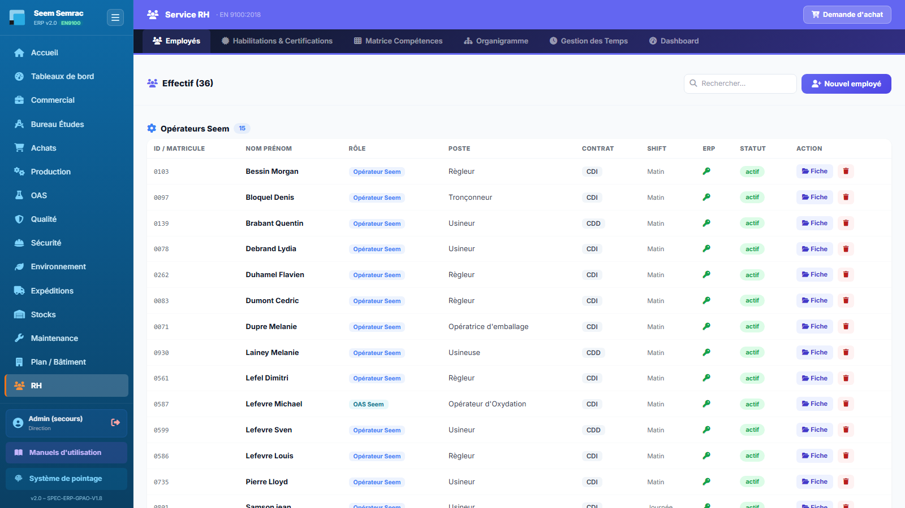
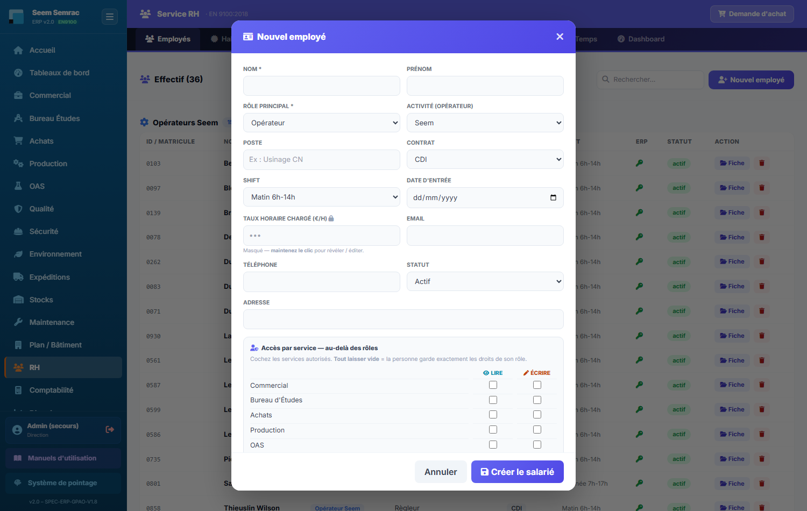
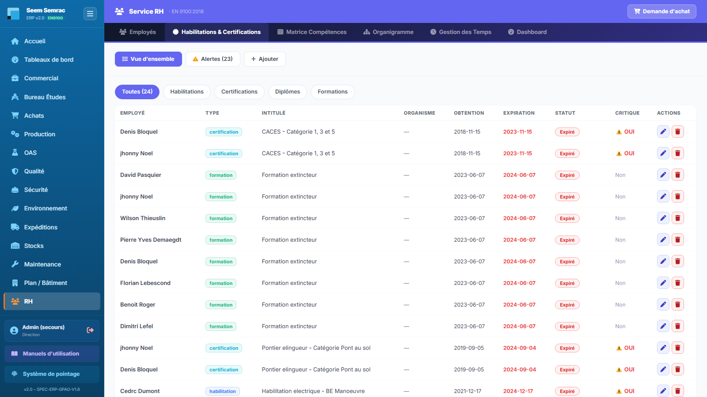
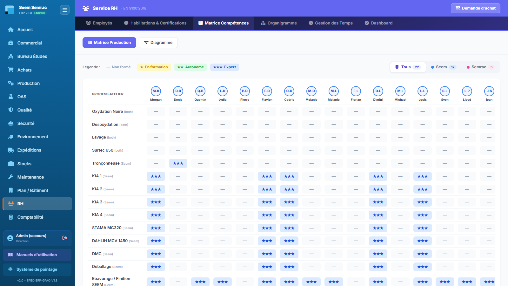
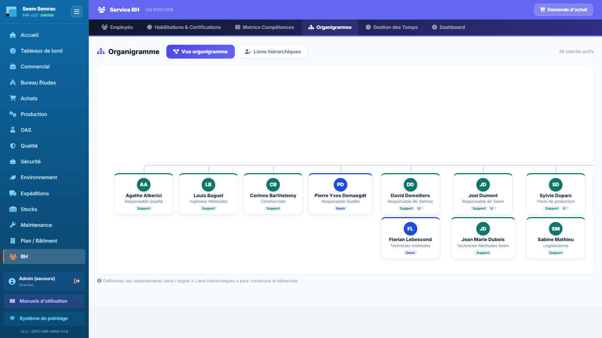
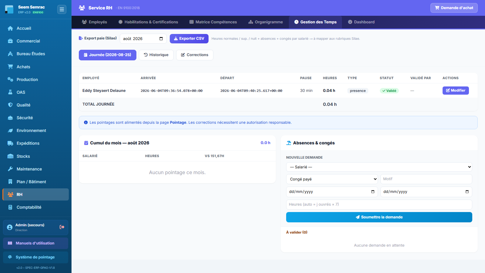
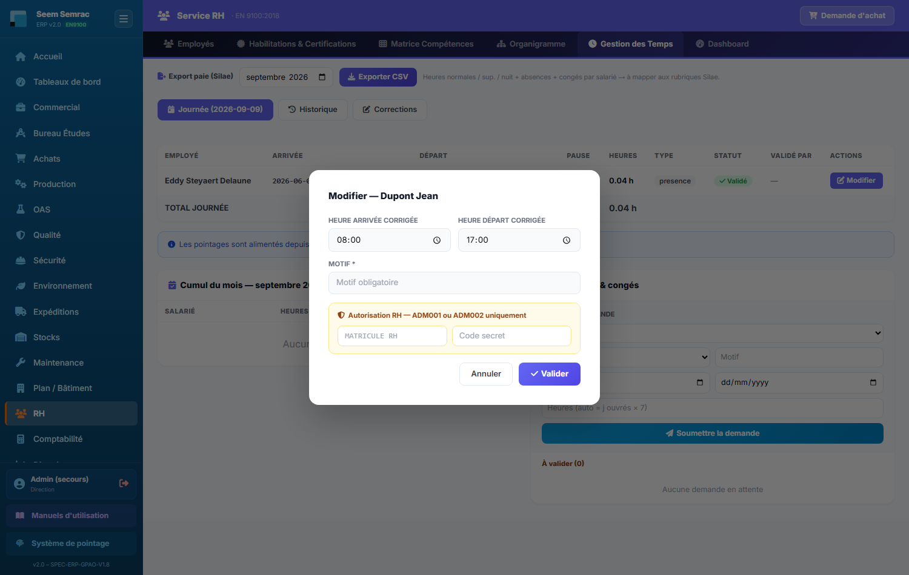
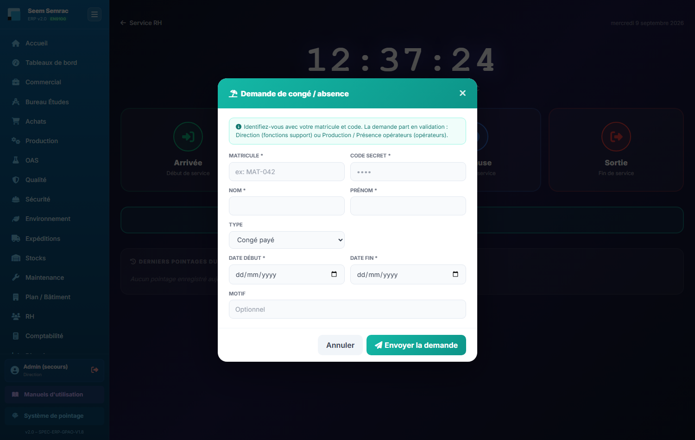
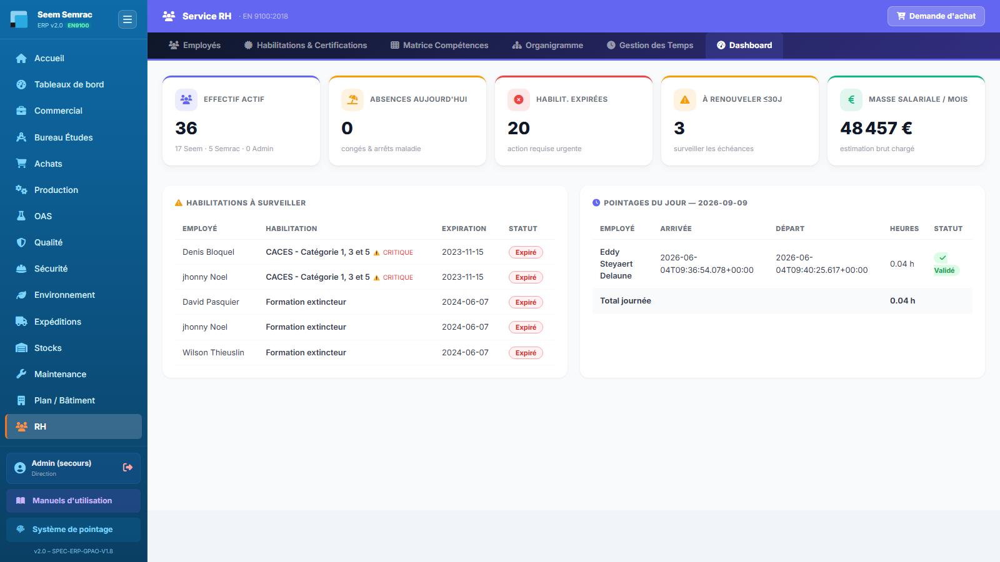

Le service RH tient le registre du personnel et tout ce qui en découle dans l'ERP : la fiche de chaque salarié (qui donne son matricule, son code PIN et donc ses droits d'accès), ses habilitations et certifications, son niveau de compétence par process d'atelier, son rattachement hiérarchique, ses heures et ses congés. Rien n'y est décoratif : un salarié sans fiche ne peut ni pointer, ni solder un bon de travail ; un congé validé ici crée les absences du planning de production ; les heures cumulées ici partent en paie. Le service se parcourt page par page (barre de navigation violette en haut), et non par onglets.
👤 Pour qui : RH (écriture) · lecture : Production, Sécurité, Comptabilité🧭 Dans l'ERP : Sidebar → RH🗂 7 pages
1
Employés
À quoi ça sert. C'est le fichier du personnel, et c'est aussi la porte d'entrée dans l'ERP : créer une fiche salarié, c'est lui attribuer un matricule, un code PIN et un ou plusieurs rôles — donc lui ouvrir exactement les écrans dont il a besoin. Toutes les autres pages RH (habilitations, compétences, organigramme, temps, congés) et une bonne partie de l'atelier (pointage, soldage des bons, autocontrôle) s'appuient sur cette liste.
Ce que vous voyez
En haut de page, le compteur « Effectif (N) », un champ Rechercher… qui filtre la liste au fil de la frappe (nom ou prénom) et le bouton violet « Nouvel employé ». En dessous, l'effectif est découpé en trois blocs, chacun avec son compteur : Opérateurs Seem, Opérateurs Semrac et Fonctions support. Les colonnes sont : ID / Matricule, Nom Prénom (avec l'e-mail en dessous), Rôle, Poste, Contrat, Shift, ERP, Statut et Action.
La colonne ERP affiche une clé : verte = identifiant ERP actif (le salarié a un code PIN, il peut se connecter et pointer) · grise = pas de code PIN, donc pas d'accès.
Statut : actif ou inactif. Un second badge apparaît sous le statut si la fiche a été soumise à la Direction (décision de validation).
Le rôle est affiché en pastille : Opérateur (bleu pour Seem, rose pour Semrac), OAS (opérateur), Qualité, Commercial, Bureau d'Études, Achats, Logistique, Production, Comptable, Maintenance, RH, Direction.
Deux boutons par ligne : « Fiche » (ouvre la fiche complète — un clic n'importe où sur la ligne fait la même chose) et la corbeille (supprimer le salarié).
Un bandeau jaune « Salariés à rattacher » peut s'afficher au-dessus de la liste : ce sont des noms cités ailleurs dans l'ERP (accidents du travail, dotations EPI, habilitations) mais qui n'ont pas de fiche. Chaque ligne indique la provenance (accident(s), EPI, habilit.) et propose « Créer & rattacher », qui ouvre une fiche vierge préremplie avec le nom.

Employés — l'effectif séparé en Opérateurs Seem / Opérateurs Semrac / Fonctions support ; regardez la colonne ERP (clé) pour savoir qui peut réellement se connecter.
Pas à pas — créer un salarié et lui ouvrir l'accès à l'ERP
Cliquez sur « Nouvel employé » : la fiche s'ouvre en fenêtre, vide, avec le bouton « Créer le salarié » en bas.
Saisissez le Nom (seul champ réellement obligatoire) et le prénom.
Choisissez le Rôle principal. Si vous choisissez Opérateur ou OAS, un champ Activité apparaît pour désigner le site (Seem ou Semrac) ; pour tous les autres rôles ce champ disparaît (le salarié est rattaché aux fonctions support). Sous le bloc « Identifiants ERP », une ligne rappelle en clair les autorisations que le rôle choisi accorde.
Complétez le poste, le contrat, le shift et la date d'entrée. Le taux horaire chargé est masqué : maintenez le clic sur le champ pour le révéler ou le saisir (il n'est modifiable qu'avec les droits d'écriture RH).
Pour donner des droits qui ne correspondent pas exactement au rôle, utilisez le tableau Accès par service : une case Lire et une case Écrire pour chacun des 15 services. Cocher Écrire coche et verrouille Lire (on n'écrit pas sans lire). Tant que tout est vide, la personne garde exactement les droits de son rôle ; dès qu'une seule case est cochée, ce tableau décide seul de ce qu'elle voit et modifie — y compris pour lui retirer un service que son rôle lui donnait. Deux points à connaître : cela n'a aucun effet sur un compte de rôle Direction (accès total, la fiche vous le rappelle), et les nouveaux droits ne s'appliquent qu'à la prochaine connexion de la personne.
Dans le cadre bleu « Identifiants ERP », renseignez l'Identifiant / Matricule (celui qui sera tapé sur la borne de pointage) et le Code PIN, puis les soldes de congés et de RTT en heures.
Renseignez le cadre vert « Données sociales » (sexe, travailleur handicapé, date de sortie) : ces informations alimentent les indicateurs RSE.
Dans le cadre jaune « Habilitation requise », saisissez le matricule et le code PIN d'un responsable RH ou Direction : sans cette double signature, la création est refusée.
Cochez si besoin « Soumettre cette fiche à la validation de la Direction » (embauche ou changement de rôle) : la fiche apparaîtra dans Direction › À valider.
Cliquez sur « Créer le salarié ». Le message de confirmation indique « Identifiants ERP actifs » et, le cas échéant, le nombre d'enregistrements Sécurité (accidents, EPI, habilitations) automatiquement rattachés à la nouvelle fiche.
Pas à pas — modifier une fiche existante
Cliquez sur la ligne du salarié (ou sur son bouton « Fiche »).
Modifiez les champs voulus. Laisser le Code PIN vide conserve le code actuel ; y saisir une valeur le remplace.
Pour désactiver un départ, passez le Statut à « Inactif » et renseignez la date de sortie — la fiche reste consultable mais le salarié sort des listes actives (matrice de compétences, organigramme).
Cliquez sur « Enregistrer ». La modification est immédiate ; si vous avez changé le rôle, les droits d'accès du salarié sont recalculés dans la foulée.
Champ
Saisie
Obligatoire
Explication
Nom
Texte
Oui
Refus d'enregistrement si vide.
Prénom
Texte
Non
Sert à composer le nom affiché partout dans l'ERP.
Rôle principal
Liste (12 rôles)
Oui
Fixe le métier, l'entité et le socle d'autorisations dans l'ERP.
Activité (opérateur)
Seem / Semrac
Oui si Opérateur ou OAS
Site de rattachement ; le champ est masqué pour les fonctions support.
Horaire théorique — sert à reconstituer les temps quand il n'y a pas de pointage.
Date d'entrée
Date
Non
Date d'embauche (aujourd'hui par défaut).
Taux horaire chargé (€/h)
Nombre, masqué
Non
Confidentiel : révélé seulement en maintenant le clic, et seulement avec les droits d'écriture RH. Alimente la masse salariale du Dashboard.
E-mail · Téléphone · Adresse
Texte
Non
Coordonnées.
Statut
Actif / Inactif
Non (Actif par défaut)
Un salarié inactif disparaît des listes opérationnelles.
Accès par service
Deux cases (Lire / Écrire) × 15 services
Non
Affine ou remplace les droits du rôle. Écrire coche et verrouille Lire. Tout vide = droits du rôle ; une seule case cochée = ce tableau décide seul (il peut aussi fermer un service). Sans effet sur un rôle Direction. Prise d'effet à la prochaine connexion de la personne.
Identifiant / Matricule
Texte
Non mais fortement recommandé
Identifiant tapé sur la borne de pointage et à la connexion. Si vous ne le renseignez pas, l'ERP en génère un.
Code PIN (MDP)
Chiffres
Non
Mot de passe du salarié. Sans PIN, pas de connexion ni de pointage (clé grise dans la liste).
Solde congés payés (h)
Nombre
Non (175 h par défaut)
Exprimé en heures — 175 h correspond à 25 jours × 7 h. Décrémenté à chaque congé payé validé.
Solde RTT / repos (h)
Nombre
Non (0 par défaut)
Décrémenté à chaque RTT validé.
Sexe · Travailleur handicapé (OETH) · Date de sortie
Signature d'un responsable RH ou Direction. Sans elle, la création est refusée.
Soumettre à la validation de la Direction
Case à cocher
Non
Envoie la fiche dans le circuit Direction › À valider.

Nouvel employé — le rôle principal en haut à gauche commande l'affichage du champ « Activité » ; les rôles supplémentaires (cases à cocher) cumulent les droits ; le bloc « Identifiants ERP » plus bas contient matricule, PIN et soldes.
Règles & points d'attention
Créer une fiche = ouvrir des droits. Choisissez le rôle avec soin : c'est lui, et lui seul, qui décide des services accessibles (les rôles supplémentaires ne font qu'élargir).
Le matricule saisi ici est celui que le salarié tapera sur la borne de pointage et à la connexion : évitez de le changer une fois diffusé.
Les soldes de congés sont en heures, pas en jours (base 7 h par jour ouvré).
Le bandeau « Salariés à rattacher » signale des données Sécurité orphelines : traitez-le, sinon les accidents et les dotations EPI de ces personnes resteront hors statistiques.
Attention : la suppression d'un salarié est irréversible et libère son matricule. L'ERP demande d'abord une confirmation, puis le matricule et le code PIN d'un valideur RH / Direction. Pour un départ ordinaire, préférez le passage en statut « Inactif » avec une date de sortie : l'historique reste lisible.
Astuce : la colonne ERP est le meilleur contrôle du lundi matin — une clé grise sur un opérateur signifie qu'il ne pourra ni pointer, ni solder son bon de travail.
2
Habilitations & Certifications
À quoi ça sert. C'est le registre des titres détenus par le personnel : habilitations (soudure, pontier, électrique…), diplômes, certifications et formations. En aéronautique, la preuve qu'un opérateur est habilité au moment où il a travaillé est exigible en audit ; cette page tient cette preuve et surveille les dates de fin de validité. Elle est partagée avec la Qualité et la Sécurité, qui y ont aussi accès en écriture.
Ce que vous voyez
Trois boutons en haut de page organisent l'écran : « Vue d'ensemble », « Alertes (N) » — le compteur est le nombre de titres qui ne sont pas valides — et « Ajouter ». En « Vue d'ensemble », une rangée de pastilles filtre par type : Toutes (N), Habilitations, Certifications, Diplômes, Formations. Le tableau liste : Employé, Type, Intitulé, Organisme, Obtention, Expiration, Statut, Critique, Actions.
Statuts : Valide · À renouveler · Expiré.
La colonne Expiration affiche « Illimitée » quand aucune date n'a été saisie, et passe en rouge dès que le titre n'est plus valide.
La colonne Critique affiche ⚠️ OUI pour les habilitations déclarées critiques au sens EN 9100 (celles dont la péremption interdit de produire), « Non » sinon.
Deux icônes par ligne : le crayon (modifier) et la corbeille (supprimer).
Sous « Alertes », deux blocs se succèdent : « Habilitations EXPIRÉES — Action immédiate requise » (encadré rouge) puis « À renouveler prochainement » (encadré orange). Chaque carte rappelle le salarié, l'intitulé, l'organisme, la date, le badge CRITIQUE le cas échéant, et porte un bouton « Renouveler ». Si tout est en ordre, un bandeau vert annonce « Aucune alerte ».

Habilitations & Certifications — les trois boutons du haut (Vue d'ensemble / Alertes / Ajouter) commandent la page ; le compteur d'alertes est le premier chiffre à regarder.
Pas à pas — déclarer une habilitation
Cliquez sur « Ajouter » : le formulaire s'affiche, vierge.
Choisissez le Salarié dans la liste déroulante (obligatoire — une habilitation est toujours rattachée à une fiche salarié).
Choisissez le Type : habilitation, diplôme, certification ou formation.
Saisissez l'Intitulé (obligatoire), l'Organisme émetteur, la date d'obtention et la date d'expiration.
Cochez « Habilitation critique (EN 9100) » si l'absence de ce titre empêche de tenir le poste.
Ajoutez éventuellement des Notes, puis cliquez sur « Enregistrer » : le titre rejoint la liste et, s'il est proche de l'échéance, il apparaît immédiatement dans les Alertes et sur le Dashboard RH.
Pas à pas — renouveler un titre expiré
Ouvrez « Alertes » et repérez la carte du salarié concerné.
Cliquez sur « Renouveler » : le titre repasse en Valide avec la date du jour comme nouvelle date d'obtention.
Rouvrez ensuite la ligne avec le crayon pour saisir la nouvelle date d'expiration et, si elle a changé, l'organisme — sans quoi le titre resterait sans échéance de surveillance.
Champ
Saisie
Obligatoire
Explication
Salarié
Liste des salariés
Oui
Rattachement à une fiche existante — créez d'abord la fiche si elle manque.
Un titre sans date d'expiration ne sera jamais signalé : ne laissez le champ vide que pour les diplômes réellement définitifs.
Les titres non valides remontent automatiquement dans Dashboard RH (tuiles « Habilit. expirées » et « À renouveler ≤30j ») et dans la revue de conformité de la Qualité.
Ce registre est le même pour la RH, la Qualité et la Sécurité : ne créez pas de doublon parce que la ligne n'apparaît pas sous le type attendu — vérifiez d'abord avec le filtre « Toutes ».
À savoir : une personne citée dans une habilitation mais absente du fichier du personnel réapparaît dans le bandeau « Salariés à rattacher » de la page Employés. C'est le signe qu'il faut lui créer une fiche.
3
Matrice Compétences
À quoi ça sert. C'est la polyvalence de l'atelier vue d'un seul écran : pour chaque process (tronçonnage, usinage CN, pliage, soudure, montage…), qui sait faire, et à quel niveau. Elle sert à répartir le travail, à repérer les process tenus par une seule personne, et à préparer les plans de formation. C'est aussi une pièce que les auditeurs demandent.
Ce que vous voyez
Deux boutons en haut : « Matrice Production » et « Diagramme ». La matrice croise les process d'atelier (en lignes, issus du référentiel Production) et les opérateurs actifs (en colonnes, représentés par une pastille d'initiales — bleue pour Seem, rose pour Semrac, violette pour les deux — avec le prénom en dessous). Chaque case contient le niveau. Un filtre segmenté en haut à droite propose Tous, Seem et Semrac avec leurs compteurs. Sous le tableau, un rappel indique le nombre d'opérateurs actifs et de process affichés.
Légende des niveaux : — Non formé · ★ En formation · ★★ Autonome · ★★★ Expert.
Le filtre Seem / Semrac masque à la fois les colonnes et les lignes du site non concerné ; les process communs aux deux sites restent affichés quel que soit le filtre.
Seuls les opérateurs actifs apparaissent : une fiche passée en « Inactif » disparaît de la matrice.

Matrice Compétences — process en lignes, opérateurs en colonnes ; la légende des quatre niveaux est rappelée au-dessus du tableau.
Pas à pas — mettre à jour le niveau d'un opérateur
Choisissez le site avec le filtre Tous / Seem / Semrac pour réduire le tableau à ce qui vous intéresse.
Repérez la case au croisement du process (ligne) et de l'opérateur (colonne).
Cliquez sur la case : le niveau avance d'un cran à chaque clic — — → ★ → ★★ → ★★★ → puis retour à —.
La sauvegarde est automatique : un message « Niveau enregistré » confirme. En cas de problème réseau, la case revient d'elle-même à sa valeur précédente : recommencez.
Sous-onglet « Diagramme »
Cette seconde vue lit la même donnée à l'envers, par process : une ligne par process, avec à droite les pastilles de tous les opérateurs habilités (niveau ★ ou plus), triés du plus expert au moins expérimenté, et le décompte « N opérateurs habilités ». Quand personne n'est habilité, la ligne affiche en rouge « Aucun opérateur habilité — risque de blocage » : c'est l'alerte la plus utile de la page. En dessous figure l'organigramme des services Seem & Semrac, sous forme arborescente à partir de la Direction Générale.
L'ERP se souvient du sous-onglet que vous consultiez : si vous quittez la page en vue « Diagramme », vous la retrouverez en « Diagramme ».
Règles & points d'attention
Un clic de trop fait repasser la case de ★★★ à — : le cycle boucle. Vérifiez toujours l'état final de la case après vos clics.
La liste des process vient du référentiel Production : pour ajouter une ligne à la matrice, il faut créer le process côté Production, pas ici.
Les process affichant « Aucun opérateur habilité » sont des points de fragilité industrielle : traitez-les en plan de formation avant qu'une absence ne bloque un lot.
Astuce : avant de valider un congé long (page Gestion des Temps), passez par le Diagramme : il montre en une ligne s'il reste quelqu'un d'habilité sur les process concernés.
4
Organigramme
À quoi ça sert. Cette page dessine la hiérarchie réelle de l'entreprise à partir d'une seule information par salarié : son responsable. Elle sert à situer chacun, à documenter les lignes de reporting pour les audits, et à savoir à qui remonte une demande.
Ce que vous voyez
Le titre Organigramme, deux boutons de bascule — « Vue organigramme » et « Liens hiérarchiques » — et, à droite, le compteur « N salariés actifs ». En vue organigramme, l'arbre est composé de cartes reliées par des traits ; chaque carte porte les initiales dans une pastille de couleur, le nom complet, le poste, le badge d'entité (Seem, Semrac ou Support) et, s'il y a lieu, le nombre de personnes rattachées. Les salariés sans responsable désigné forment le sommet de l'arbre.

Organigramme — l'arbre se construit tout seul à partir des rattachements ; tant qu'aucun responsable n'est défini, tout le monde apparaît au même niveau.
Pas à pas — construire ou corriger la hiérarchie
Cliquez sur « Liens hiérarchiques » : la page bascule sur une liste, une ligne par salarié actif.
Sur la ligne du salarié, ouvrez le menu « Responsable : » et choisissez la personne à laquelle il est rattaché. L'option « — Aucun (sommet) — » place le salarié au sommet de l'arbre (typiquement la Direction).
Le choix est enregistré immédiatement — le message « Rattachement mis à jour » s'affiche et la page se rafraîchit.
Revenez sur « Vue organigramme » pour vérifier le résultat.
Règles & points d'attention
Seuls les salariés actifs figurent sur cette page : un départ passé en « Inactif » disparaît de l'arbre.
Un salarié ne peut pas être son propre responsable ; l'ERP ignore ce choix.
Il n'y a pas de bouton « Enregistrer » : chaque sélection dans un menu déroulant est écrite aussitôt. Ne quittez pas la page en pensant devoir valider.
Le poste affiché sur les cartes est celui saisi dans la fiche salarié (page Employés) : pour corriger un libellé, c'est là qu'il faut le faire.
À savoir : l'organigramme par services (Direction Générale → Commercial, Bureau d'Études, Qualité, Production, Maintenance, OAS) est une vue distincte, présentée en bas du sous-onglet « Diagramme » de la Matrice Compétences.
5
Gestion des Temps
À quoi ça sert. C'est le poste de pilotage des heures et des absences. On y relit les pointages de la journée venus de la borne, on les corrige si nécessaire (avec autorisation), on suit le cumul mensuel de chacun, on traite les demandes de congé — et on exporte le tout vers la paie. Un congé validé ici ne reste pas dans le module RH : il crée les absences du planning de production et rend au pool les bons de travail déjà affectés.
Ce que vous voyez
Tout en haut, la barre « Export paie (Silae) » : un sélecteur de mois et le bouton « Exporter CSV ». En dessous, trois boutons organisent l'écran : « Journée (date du jour) », « Historique » et « Corrections ». La vue « Journée » affiche le tableau des pointages : Employé, Arrivée, Départ, Pause, Heures, Type, Statut, Validé par, Actions, suivi d'une ligne TOTAL JOURNÉE. Un encart bleu rappelle que les pointages proviennent de la page Pointage et que les corrections nécessitent une autorisation. Enfin, deux cartes se partagent le bas de page : « Cumul du mois » et « Absences & congés ».
Statut d'un pointage : En cours (arrivée pointée, pas encore de sortie) · Validé · Corrigé.
Tant que la personne n'a pas pointé sa sortie, la colonne Départ affiche « En cours » en bleu et les heures ne sont pas encore calculées.
« Cumul du mois » additionne les heures par salarié et les compare à la base mensuelle de 151,67 h : le pourcentage est vert au-delà, orange en dessous.
Statuts d'un congé : En attente · Validé · Refusé · Annulé.
Si aucune badgeuse n'a alimenté la journée, l'ERP reconstitue les temps à partir de la présence saisie en Production : l'horaire du shift du salarié est appliqué (6h-14h, 14h-22h, 7h-17h ou nuit), le type affiché est « présence » et la colonne « Validé par » indique « Planning présence ».

Gestion des Temps — la barre d'export Silae en haut, les pointages du jour au centre, le cumul mensuel et les congés en bas de page.
Pas à pas — enregistrer et valider une demande de congé
Dans la carte « Absences & congés », bloc « Nouvelle demande », choisissez le salarié — la liste rappelle son solde d'heures entre parenthèses.
Choisissez le type : Congé payé, RTT, Maladie, Sans solde, Événement familial, Formation ou Récupération, et saisissez un motif si utile.
Renseignez la date de début et la date de fin. Laissez le champ Heures vide pour laisser l'ERP calculer : jours ouvrés (week-ends exclus) × 7 h.
Cliquez sur « Soumettre la demande » : elle apparaît sous « À valider (N) » avec le badge En attente.
Pour trancher, utilisez les deux boutons de la ligne : « Valider » (coche verte) ou refuser (croix rouge).
À la validation, l'ERP enchaîne tout seul : il pose une absence par jour ouvré dans le planning de présence, libère les bons de travail déjà affectés à l'opérateur sur la période (ils repartent au pool à réaffecter) et décrémente le solde — congés payés ou RTT selon le type. Le message de confirmation indique le nombre de jours réellement posés.
Pas à pas — corriger un pointage
Dans la vue « Journée », cliquez sur « Modifier » sur la ligne concernée.
Saisissez l'heure d'arrivée et/ou l'heure de départ corrigées, puis le Motif (obligatoire — il est tracé).
Dans le cadre jaune, saisissez le matricule RH habilité et le code secret : sans cette autorisation, la correction est refusée.
Cliquez sur « Valider ».
Variante : le bouton « Corrections » en haut de page ouvre un formulaire de demande de correction (employé, date concernée, heures corrigées, autorisation accordée par, motif obligatoire) destiné aux cas traités en différé.

Corriger un pointage — le nom du salarié et la date sont rappelés en tête ; on ne resaisit que l'heure d'arrivée et/ou de départ à rectifier. Le motif est obligatoire et reste tracé, et le cadre jaune du bas (matricule RH habilité + code secret) conditionne l'enregistrement : sans lui, « Valider » refuse la correction. Après validation, la ligne repasse en statut Corrigé dans le tableau de la journée.
Pas à pas — exporter les temps vers la paie
En haut de page, choisissez le mois dans le sélecteur « Export paie (Silae) ».
Cliquez sur « Exporter CSV » : le fichier silae_temps_AAAA-MM.csv se télécharge.
Il contient une ligne par salarié : matricule, nom, prénom, entité, période, heures normales, heures supplémentaires, heures de nuit, jours d'absence et jours de congés — à mapper une fois pour toutes aux rubriques de Silae.
Sous « Historique », le bouton « Exporter Excel » propose un export de confort du détail des pointages.

Nouvelle demande de congé — dans la carte « Absences & congés » : salarié, type, motif, dates, puis heures laissées vides pour le calcul automatique ; les demandes en attente s'empilent juste en dessous sous « À valider ».
Champ
Saisie
Obligatoire
Explication
Salarié
Liste
Oui
Le solde de congés en heures est rappelé à côté du nom.
Détermine le solde décrémenté (congés payés ou RTT) et la nature de l'absence posée au planning (maladie ou congé).
Motif
Texte
Non
Précision libre.
Date début · Date fin
Dates
Oui
Bornes incluses ; seuls les jours ouvrés sont comptés.
Heures
Nombre
Non
Laissé vide : calcul automatique (jours ouvrés × 7 h). Rempli : votre valeur fait foi.
Règles & points d'attention
Le décompte ignore les samedis et dimanches mais pas les jours fériés : ajustez le champ Heures pour une période qui en contient.
La validation d'un congé est le seul geste qui écrit dans le planning de production : ne la faites qu'une fois la décision prise.
Si le message de confirmation annonce moins de jours posés que prévu, un avertissement le signale : vérifiez le planning de présence avant de considérer l'absence comme acquise.
Les corrections de pointage sont tracées (motif + matricule autorisant) : c'est ce qui rend l'export de paie défendable.
Attention : valider un congé libère les bons de travail affectés à l'opérateur sur la période — ils retournent au pool des bons à affecter. Prévenez la Production, sinon des bons attendront sans titulaire au planning.
Astuce : lancez l'export Silae en tout début de mois suivant, après avoir purgé les pointages « En cours » (sorties oubliées) via le bouton « Modifier » : une sortie manquante, ce sont des heures absentes du CSV.
6
Dashboard RH
À quoi ça sert. C'est la page d'accueil du service RH : elle répond en un coup d'œil aux quatre questions du matin — combien de personnes présentes, qui est absent, quelles habilitations sont en péril, et où en est la masse salariale. Elle ne se saisit pas : elle agrège ce qui a été renseigné sur les autres pages.
Ce que vous voyez
Cinq tuiles en haut de page, puis deux tableaux côte à côte.
Effectif actif — nombre de salariés au statut actif, détaillé en dessous : N Seem · N Semrac · N Admin.
Absences aujourd'hui — congés et arrêts maladie du jour.
Habilit. expirées — titres dont la validité est dépassée : action requise urgente.
À renouveler ≤30j — titres dont l'échéance approche.
Masse salariale / mois — estimation du brut chargé : somme des taux horaires chargés × 151,67 h.
« Habilitations à surveiller » — les cinq premiers titres non valides, avec le salarié, l'intitulé (marqué ⚠️ CRITIQUE le cas échéant), la date d'expiration et le statut. Quand tout est en règle, un message vert l'annonce.
« Pointages du jour » — pour la date du jour : employé, arrivée, départ (ou « En cours »), heures, statut, et le total de la journée.

Dashboard RH — les deux tuiles rouge et orange (habilitations expirées / à renouveler) sont celles qui appellent une action ; le détail est juste en dessous.
Pas à pas — la revue quotidienne
Regardez la tuile Habilit. expirées. Si elle n'est pas à zéro, ouvrez la page Habilitations & Certifications → bouton « Alertes » et traitez les cartes rouges en priorité.
Regardez À renouveler ≤30j : ce sont les formations à programmer maintenant pour éviter la case rouge le mois prochain.
Parcourez « Pointages du jour » : une ligne restée « En cours » en fin de journée signale une sortie non pointée, à corriger sur la page Gestion des Temps.
Comparez l'Effectif actif aux Absences aujourd'hui pour anticiper la charge d'atelier avec la Production.
Règles & points d'attention
La masse salariale n'est qu'une estimation : elle vaut ce que valent les taux horaires chargés saisis dans les fiches salarié. Une fiche sans taux compte pour zéro.
Les chiffres sont calculés à l'ouverture de la page : rechargez-la après une saisie faite sur une autre page RH.
Le Dashboard ne corrige rien : chaque tuile est une invitation à ouvrir la page correspondante.
7
Système de pointage
À quoi ça sert. C'est la borne d'atelier : un écran plein, prévu pour rester allumé sur un poste partagé à l'entrée de la production. Chacun y déclare son arrivée, ses pauses et sa sortie avec son matricule et son code PIN — sans avoir à se connecter à l'ERP. Tout ce qui est badgé ici alimente la page Gestion des Temps, puis l'export de paie. C'est aussi depuis cette borne qu'un salarié peut déposer une demande de congé.
Ce que vous voyez
Un écran sombre, sans barre latérale ni menus : une horloge géante qui défile à la seconde, le titre « Terminal de Pointage · Seem Semrac », la date du jour en toutes lettres et un lien discret « Service RH » en haut à gauche pour revenir à l'ERP. Au centre, quatre grands boutons, puis un bouton pleine largeur pour les congés, et enfin le journal « Derniers pointages du jour ».
Arrivée (vert) — Début de service.
Début Pause (orange) — Pause déjeuner.
Fin Pause (bleu) — Retour en service.
Sortie (rouge) — Fin de service.
« Faire une demande de congé » (bandeau turquoise) — accessible à tous les salariés.
Le journal du bas récapitule les passages de la journée, heure par heure, avec le nom et le type d'événement (arrivée en vert, sortie en rouge).
Système de pointage — écran autonome plein écran : horloge, quatre boutons d'action, demande de congé et journal du jour.
Pas à pas — pointer son arrivée ou sa sortie
Appuyez sur le bouton correspondant : Arrivée, Début Pause, Fin Pause ou Sortie.
Une fenêtre « Pointage — action » s'ouvre : saisissez votre matricule (il se met automatiquement en majuscules) puis votre code secret.
Appuyez sur « Valider le pointage » — ou simplement sur la touche Entrée depuis le champ du code.
Le passage s'inscrit aussitôt en haut du journal et un message confirme le nom et l'heure. À la sortie, le message indique en plus le nombre d'heures travaillées : temps entre l'arrivée et la sortie, moins la pause si elle a été badgée.
Pointage à la borne — le titre de la fenêtre rappelle l'action badgée (Arrivée, Début Pause, Fin Pause ou Sortie) : vérifiez-le avant de saisir. Deux champs seulement, Matricule (passé automatiquement en majuscules) et Code secret ; la touche Entrée depuis le code équivaut au bouton « Valider le pointage ». Un matricule inconnu ou sans code PIN est refusé ici même.
Pas à pas — demander un congé depuis la borne
Appuyez sur « Faire une demande de congé ».
Saisissez votre matricule et votre code secret (obligatoires : ils authentifient la demande), puis vos nom et prénom.
Choisissez le type — Congé payé, RTT, Maladie, Sans solde ou Autre — et saisissez les dates de début et de fin (obligatoires) ainsi qu'un motif si vous le souhaitez.
Appuyez sur « Envoyer la demande ». Le décompte se fait tout seul en jours ouvrés × 7 h, et le message de confirmation indique vers qui part la demande : Production (Présence opérateurs) pour un opérateur, Direction pour une fonction support.
La demande apparaît alors dans Gestion des Temps → « À valider » avec le statut En attente.
Règles & points d'attention
Pas de matricule ou pas de code PIN = pas de pointage. Un salarié refusé à la borne a presque toujours une clé grise dans la colonne ERP de la page Employés : c'est là qu'on lui attribue son PIN.
On ne peut pointer son arrivée qu'une fois par jour : une seconde tentative renvoie « a déjà pointé son arrivée aujourd'hui ».
Impossible de pointer une pause ou une sortie sans avoir pointé l'arrivée : le message « doit d'abord pointer son arrivée » s'affiche. Dans ce cas, la RH régularise via Gestion des Temps → Modifier.
Une sortie oubliée laisse la journée en statut « En cours » et sans heures : elle sera absente de l'export de paie tant qu'elle n'est pas corrigée.
La borne n'affiche aucune donnée personnelle au-delà du journal des passages du jour : elle peut rester en libre accès à l'atelier.
À savoir : l'écran de pointage s'ouvre depuis le lien « Système de pointage » tout en bas de la barre latérale de l'ERP, ou directement à l'adresse /rh/pointage — c'est cette adresse qu'il faut mettre en page d'accueil du poste d'atelier.
Astuce : demandez aux opérateurs de badger aussi Début Pause et Fin Pause : sans elles, la pause n'est pas déduite du calcul et le temps de présence est surestimé.